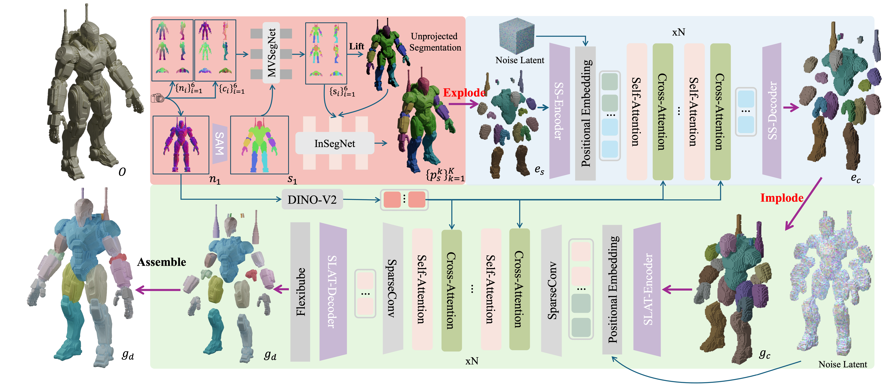

Part-level 3D generation is crucial for various downstream applications, including gaming, film production, and industrial design. However, decomposing a 3D shape into geometrically plausible and meaningful components remains a significant challenge. Previous part-based generation methods often struggle to produce well-constructed parts, exhibiting either poor structural coherence, geometric implausibility, inaccuracy, or inefficiency. To address these challenges, we introduce EI-Part, a novel framework specifically designed to generate high-quality 3D shapes with components, characterized by strong structural coherence, geometric plausibility, geometric fidelity, and generation efficiency. We propose utilizing distinct representations at different stages: an Explode state for part completion and an Implode state for geometry refinement. This strategy allows us to fully leverage spatial resolution, enabling flexible part completion and fine geometric details generation. To maintain structural coherence between parts, a self-attention mechanism is incorporated in both the exploded and imploded states, facilitating effective information perception and feature fusion among components during generation. Extensive experiments conducted on various benchmarks demonstrate that EI-Part efficiently yields semantically meaningful and structurally coherent parts with fine-grained geometric details, achieving state-of-the-art performance in part-level generation compared to existing methods.

Figure 2. The pipeline of our proposed EI-Part. Given an input 3D shape O, we first obtain its normal map {ni}6i=1 and canonical coordinate maps (CCMs) {ci}6i=1 from six views. We then perform frontal segmentation using SAM and employ MVSegNet to achieve multi-view consistent segmentations. These segmentations are lifted to 3D to create an initial part segmentation, which is subsequently inpainted by InSegNet to produce accurate 3D segmented shapes {pks}Kk=1. The segmented result is exploded into discrete 3D voxels, enabling us to perform conditional diffusion completion to generate geometrically plausible and complete part structures ec. Next, the exploded complete parts are imploded back to a compact state for conditional diffusion refinement, capturing fine-level details gd. Thanks to the utilization of the exploded-imploded strategy, we fully utilize spatial resolution at different stages, enhancing the accuracy of part completion and surface details. As a result, the 3D shapes gd generated by our method exhibit individual, structurally consistent, and geometrically plausible part shapes with fine-grained geometric details.
Select one RGB input below, then choose a baseline method from the dropdown.
Current sample ID: -
@misc{sun2025eipart,
title={EI-Part: Explode for Completion and Implode for Refinement},
author={Wanhu Sun and Zhongjin Luo and Heliang Zheng and Jiahao Chang and Chongjie Ye and Huiang He and Shengchu Zhao and Rongfei Jia and Xiaoguang Han},
year={2026},
eprint={TODO},
archivePrefix={arXiv},
primaryClass={cs.CV},
url={TODO}
}